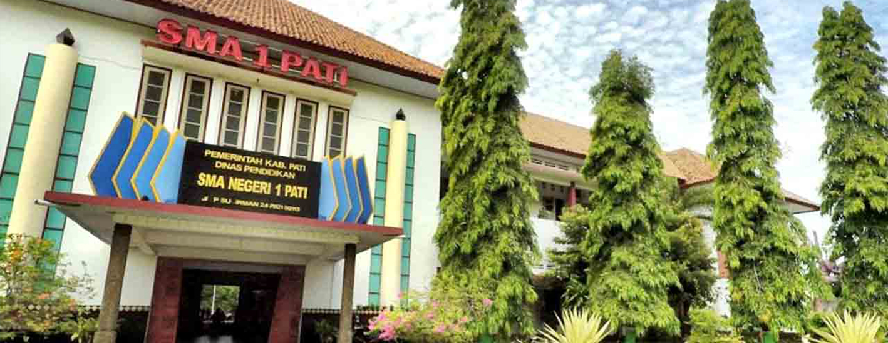

Silahkan anda akses sman1pati.sch.id untuk mendapatkan semua informasi terkait
Kurikulum Merdeka SMA Negeri 1 Pati

PSTS DAN PSAJ DILAKSANAKAN
Silahkan anda akses sman1pati.sch.id untuk mendapatkan semua informasi terkait
PSTS dan PSAJ SMA Negeri 1 Pati
PROFIL SMA NEGERI 1 PATI
Sambutan Kepala Sekolah
SMA Negeri 1 Pati merupakan sekolah megah di tengah kota Pati,
Jawa Tengah yang berhasil mencetak pemimpin masa depan dengan
memberikan layanan pendidikan terbaik dengan metode pembelajaran
berdiferensiasi yang dibantu dengan teknologi masa kini.